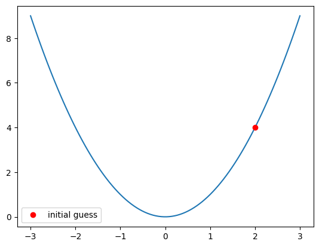
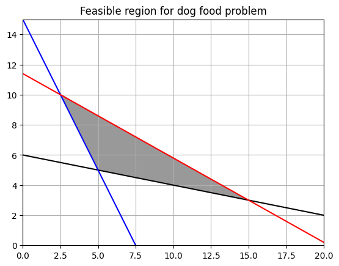
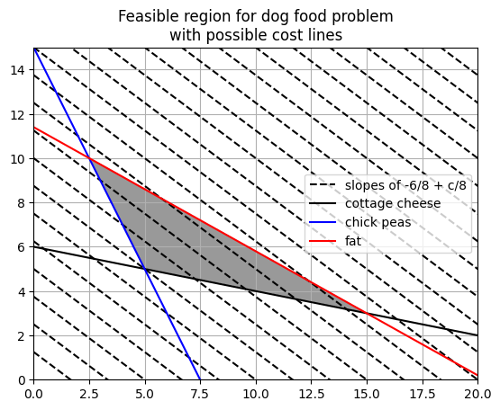
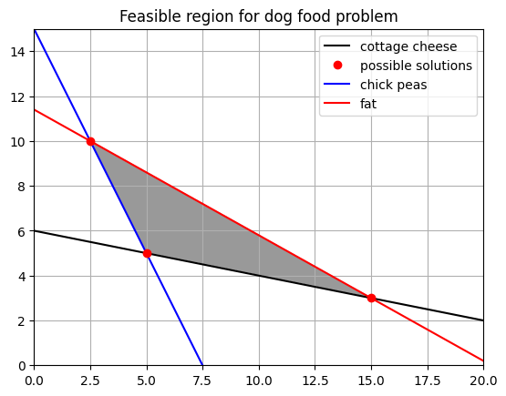

Optimization#
import numpy as np
import matplotlib.pyplot as plt
import scipy.optimize as optim
from scipy.optimize import minimize
Basic Example#
To start, let’s try to use the minimize function to find the minimum of \(f(x) = x^2\)
Examine the documentation below and use the function
fand initial guessx0to assign the solution to the minimization problem toresultsbelow and print the \(x\)-coordinate withprint(results.x).
def f(x): return x**2
x0 = 2
x = np.linspace(-3, 3, 100)
plt.plot(x, f(x))
plt.plot(x0, f(x0), 'ro', label = 'initial guess')
plt.legend();

minimize?
results = ''
# print(results.x)
Am example#
A dog daycare feeds the dogs a diet that requires a minimum of 15 grams of fiber, 30 grams of protein. Each pound of chick peas contains 1 gram of protein, 5 grams of fiber, and 25 grams of fat. Cottage cheese contains 2 grams of protein, 1 gram of fiber, and 14 grams of fat. Suppose that chick peas are priced at 8 USD per pound, and cottage cheese at 6 USD per pound. The nutritionist claims the dogs will not eat more than 285 grams of fat. Your goal is to obtain the most economical solution given these constraints.
This is summarized in the table below:
ingredient |
protein |
fiber |
fat |
cost |
|---|---|---|---|---|
chick peas |
1 g |
5 g |
25 g |
$8 |
cottage cheese |
2 g |
1 g |
14 g |
$6 |
minimum |
15 g |
30 g |
||
maximum |
285 g |
Mathematically, the objective function is:
where \(x\) = chick peas and \(y\) = cottage cheese. This is the total cost of the combination of chick peas and cottage cheese.
We will save the coefficients as a list for use later.
c = [6, 8]
Because each pound of chick peas contains 1 gram of protein and each cottage cheese 2 grams, and know this needs to combine to at least 15 grams you have:
As for cottage cheese, you have:
As for the fat content, you have:
Further, the amount of \(x\) and \(y\) must not be negative.
Graphical representation#
To visualize the solution, you can imagine each of the constraints as a region. First, functions for these are defined and plotted together.
def cp(x): #chick peas
return -2*x + 15
def cc(x): #cottage cheese
return -1/5*x + 30/5
def fat(x): #fat
return -14/25*x + 285/25
y = 0
x = np.linspace(0, 30, 100)
d = np.linspace(0, 30, 1000)
x, y = np.meshgrid(d, d)
plt.imshow((y > cp(x)) & (y < fat(x)) & (y > cc(x)).astype('int'),
origin = 'lower',
cmap = 'Greys',
extent=(x.min(), x.max(), y.min(), y.max()),
alpha = 0.4)
plt.plot(d, cc(d), '-', color = 'black', label = 'cottage cheese')
plt.plot(d, cp(d), '-', color = 'blue', label = 'chick peas')
plt.plot(d, fat(d), '-', color = 'red', label = 'fat')
plt.ylim(0, 15)
plt.xlim(0, 20)
plt.title('Feasible region for dog food problem')
plt.grid();

The form of all solutions can be found by rewriting the objective function as:
Below, different values of \(C\) are plotted against the original region. Note that the objective function will obtain its maximum and minimum values at the vertices of the polygon. Hence, to solve the problem, you need only look to the vertices. These are highlighted in the plot on the right.
# fig, ax = plt.subplots(1, 2, figsize = (30, 10))
for i in range(10, 1000, 10):
plt.plot(d, -6/8*d + i/8, '--', color = 'black')
plt.plot(d, -6/8*d + i, '--', color = 'black', label = 'slopes of -6/8 + c/8')
d = np.linspace(0, 30, 1000)
x, y = np.meshgrid(d, d)
plt.imshow((y > cp(x)) & (y < fat(x)) & (y > cc(x)).astype('int'),
origin = 'lower',
cmap = 'Greys',
extent=(x.min(), x.max(), y.min(), y.max()),
alpha = 0.4)
plt.plot(d, cc(d), '-', color = 'black', label = 'cottage cheese')
plt.plot(d, cp(d), '-', color = 'blue', label = 'chick peas')
plt.plot(d, fat(d), '-', color = 'red', label = 'fat')
plt.ylim(0, 15)
plt.xlim(0, 20)
plt.title('Feasible region for dog food problem\nwith possible cost lines')
plt.grid()
plt.legend();

d = np.linspace(0, 30, 1000)
x, y = np.meshgrid(d, d)
plt.imshow((y > cp(x)) & (y < fat(x)) & (y > cc(x)).astype('int'),
origin = 'lower',
cmap = 'Greys',
extent=(x.min(), x.max(), y.min(), y.max()),
alpha = 0.4)
plt.plot(d, cc(d), '-', color = 'black', label = 'cottage cheese')
plt.plot(15, 3, 'ro', label = 'possible solutions')
plt.plot(d, cp(d), '-', color = 'blue', label = 'chick peas')
plt.plot(d, fat(d), '-', color = 'red', label = 'fat')
plt.ylim(0, 15)
plt.xlim(0, 20)
plt.title('Feasible region for dog food problem')
plt.grid()
plt.plot(5, 5, 'ro')
plt.plot(5/2, 10, 'ro')
plt.legend();

using linprog#
To solve the problem using python, scipy.optimize contains the linprog function that will solve this problem. The one exception is that the greater than inequality constraints need to be converted to less thans by multiplying both sides by -1.
#cost coeffients
c = [6, 8]
#coefficients of less than problems
A = [[-2, -1], [-1, -5], [14, 25]]
#right side of inequalities
b = [-15, -30, 285]
res = optim.linprog(c, A, b)
res
message: Optimization terminated successfully. (HiGHS Status 7: Optimal)
success: True
status: 0
fun: 70.0
x: [ 5.000e+00 5.000e+00]
nit: 2
lower: residual: [ 5.000e+00 5.000e+00]
marginals: [ 0.000e+00 0.000e+00]
upper: residual: [ inf inf]
marginals: [ 0.000e+00 0.000e+00]
eqlin: residual: []
marginals: []
ineqlin: residual: [ 0.000e+00 0.000e+00 9.000e+01]
marginals: [-2.444e+00 -1.111e+00 -0.000e+00]
mip_node_count: 0
mip_dual_bound: 0.0
mip_gap: 0.0
EXAMPLE
PROJECT |
\(C_0\) |
\(C_1\) |
\(C_2\) |
NPV at 10% |
Profitability Index |
|---|---|---|---|---|---|
A |
-10 |
-30 |
5 |
21 |
2.1 |
B |
-5 |
5 |
2 |
16 |
3.2 |
C |
-5 |
5 |
15 |
12 |
2.4 |
D |
0 |
-40 |
60 |
13 |
0.4 |
CONSTRAINTS
Cash flows for period 0 must not be greater than 10 million.
Total outflow in period 1 must not be greater than 10 million.
Finally the amount of the investment must be positive and we cannot purchase more than one of each.
from scipy.optimize import linprog
coefs = [-21, -16, -12, -13]
constr = [[10, 5, 5, 0],
[-30, -5, -5, 40]]
right_side = [10, 10]
bounds = [(0, 1), (0, 1), (0, 1), (0, 1)]
linprog(coefs, constr, right_side, bounds = bounds)
message: Optimization terminated successfully. (HiGHS Status 7: Optimal)
success: True
status: 0
fun: -36.25
x: [ 5.000e-01 1.000e+00 0.000e+00 7.500e-01]
nit: 2
lower: residual: [ 5.000e-01 1.000e+00 0.000e+00 7.500e-01]
marginals: [ 0.000e+00 0.000e+00 1.750e+00 0.000e+00]
upper: residual: [ 5.000e-01 0.000e+00 1.000e+00 2.500e-01]
marginals: [ 0.000e+00 -2.250e+00 0.000e+00 0.000e+00]
eqlin: residual: []
marginals: []
ineqlin: residual: [ 0.000e+00 0.000e+00]
marginals: [-3.075e+00 -3.250e-01]
mip_node_count: 0
mip_dual_bound: 0.0
mip_gap: 0.0